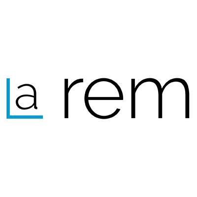

Hi, I'm Vincent!
I'm an applied researcher at Microsoft. Before that, I did a PhD at the Laboratory for Communications and Applications at EPFL in Lausanne, Switzerland. I was supervised by Prof. Matthias Grossglauser and Prof. Patrick Thiran.
I am interested in Machine Learning and Data Mining, more specifically in combining models and datasets to solve real-world problems. I built Sidekick and Predikon to make some of my results available to the public.
During my PhD, I was an intern at the Machine Learning Group of Microsoft Research in Redmond, WA. I also did two internships at the Machine Learning Department of NEC Laboratories in Princeton, NJ, where I worked on NLP.
Publications
2015
- Vincent Etter. Combine and Conquer: Mining Social Systems for Prediction. EPFL, 2015.
2014
- Vincent Etter, Julien Herzen, Matthias Grossglauser, Patrick Thiran. Mining Democracy. Proceedings of the second ACM Conference on Online Social Networks (COSN'14), 2014. Best paper award
2013
- Vincent Etter, Matthias Grossglauser, Patrick Thiran. Launch Hard or Go Home! Predicting the Success of Kickstarter Campaigns. Proceedings of the first ACM Conference on Online Social Networks (COSN'13), 2013.
- Vincent Etter, Mohamed Kafsi, Ehsan Kazemi, Matthias Grossglauser, Patrick Thiran. Where to Go from Here? Mobility Prediction from Instantaneous Information. Pervasive and Mobile Computing, Volume 9, Issue 9, Pages 784-797, 2013.
2012
- Vincent Etter, Mohamed Kafsi and Ehsan Kazemi. Been There, Done That: What Your Mobility Traces Reveal about Your Behavior. Proceedings of Mobile Data Challenge by Nokia Workshop at the Tenth International Conference on Pervasive Computing, 2012. Winner of the Next Place Prediction challenge
2011
- Vincent Etter, Ivana Jovanovic and Martin Vetterli. Use of Learned Dictionaries in Tomographic Reconstruction. SPIE Optical Engineering + Applications, International Society for Optics and Photonics, 2011.
2009
- Vincent Etter. Semantic Vector Machines. Master Thesis, EPFL/NEC Labs, 2009.
Press
I was lucky enough to have some press coverage of my work. I gathered below a few articles talking about my different projects.
- Intelligent keyboard
- Political data analysis
-
- Kickstarter predictions
-
- Mobility prediction
- 


More information
- You can find more information about my teaching and supervised projects on my EPFL webpage.
- Consult my Google Scholar profile.
- For more details about my different jobs and internships, have a look at my LinkedIn profile.
- I am the co-founder of Dootix, a web-hosting and web-development company.
Contact
vincent@etter.iohttp://vincent.etter.io
W00ka1